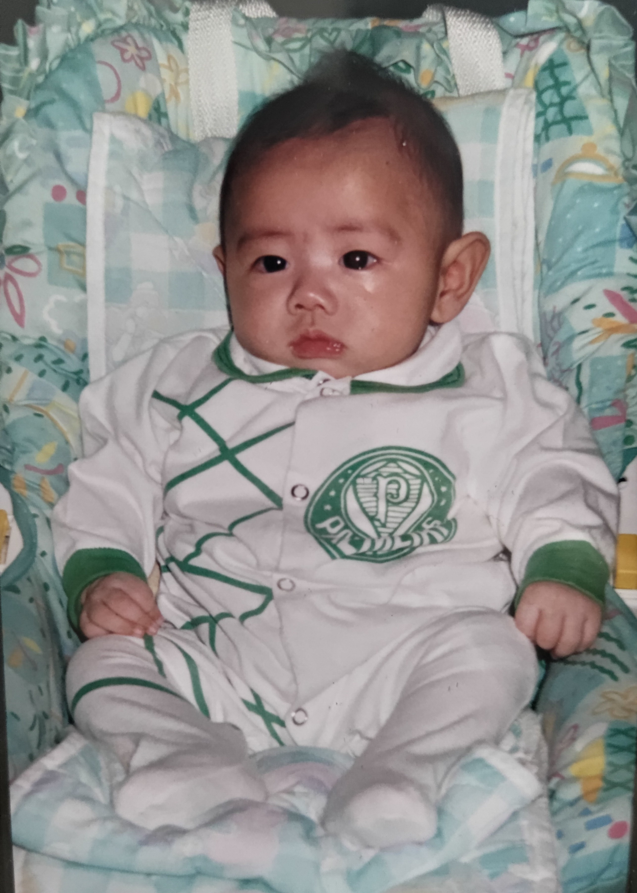
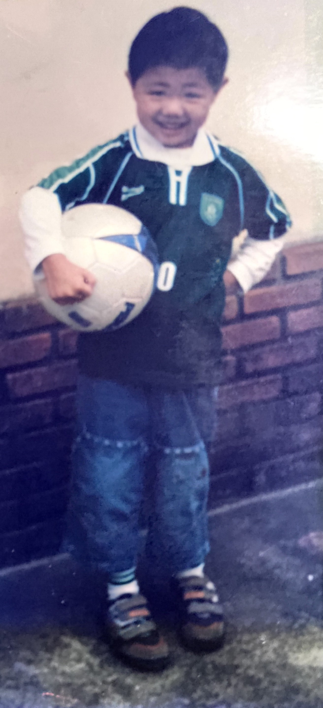
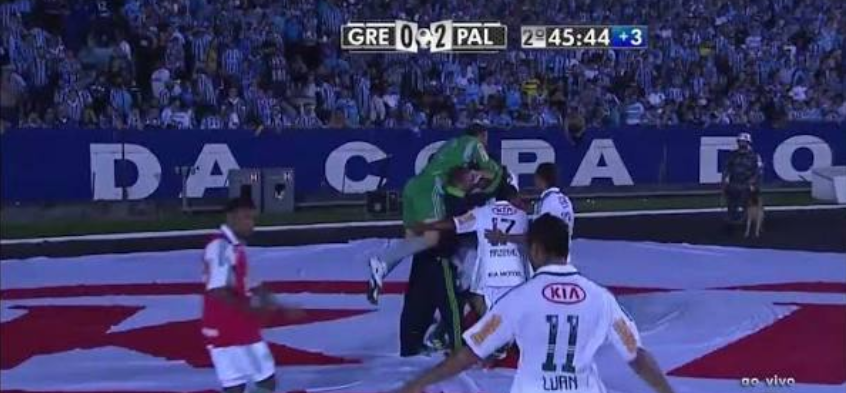
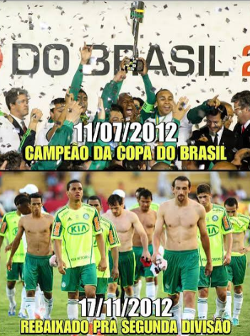
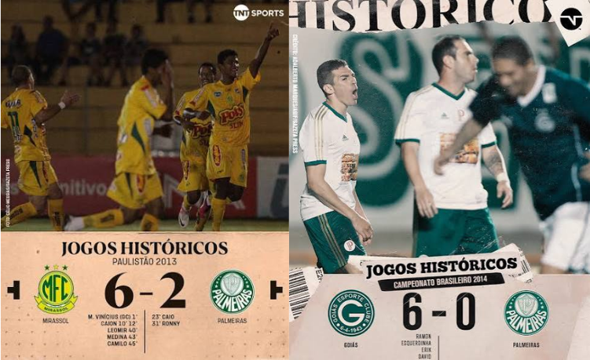

Minha história com o clube
O Palmeiras está presente na minha vida desde o momento em que nasci!

Por influência principalmente do meu pai e minha família, já nasci palmeirense antes mesmo de saber meu próprio nome
Quando criança não era realmente um torcedor...

Quando eu era criança simpatizava com o clube, porém não gostava do esporte e longe de me considerar um verdadeiro torcedor.
O momento em que me tornei um torcedor

Me tornei um verdadeiro torcedor do clube no dia 13/06/2012 assistindo ao jogo entre Grêmio x Palmeiras pela Copa do Brasil
O Palmeiras mudou minha visão sobre o futebol
Antes de torcer pelo clube tinha uma visão muito negativa sobre o esporte, o clube mudou totalmente o meu ponto de vista.
Conheci os dois lados de ser um torcedor...

No mesmo ano em que comecei a torcer vi o clube conquistar um grande título, porém ser rebaixado meses depois.
Aprendi a seguir em frente mesmo quando estiver difícil...

Nos anos seguintes do título o Palmeiras passou por diversas turbulências, porém isso só fortaleceu meus laços com o clube.
Desenvolvimento junto com o clube
 Nos anos seguintes do título o Palmeiras passou por diversas turbulências, porém isso só fortaleceu meus laços com o clube.
Nos anos seguintes do título o Palmeiras passou por diversas turbulências, porém isso só fortaleceu meus laços com o clube.